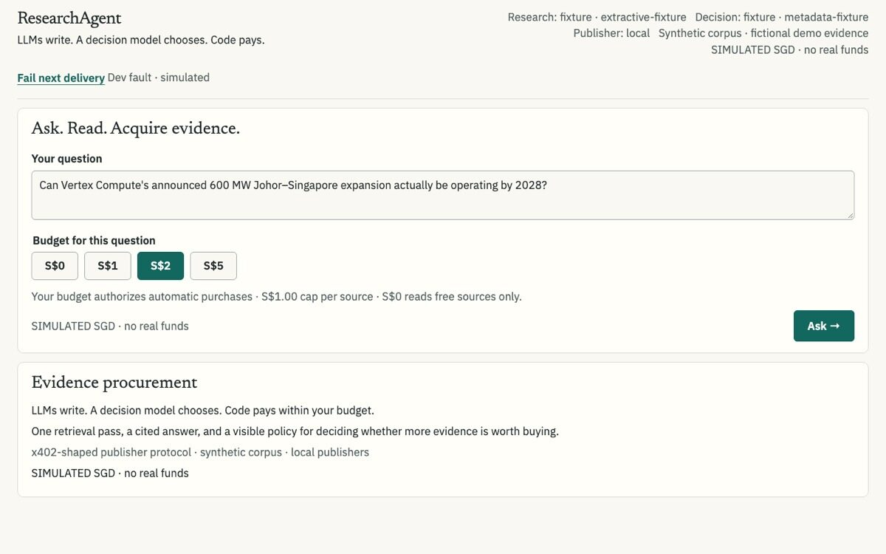
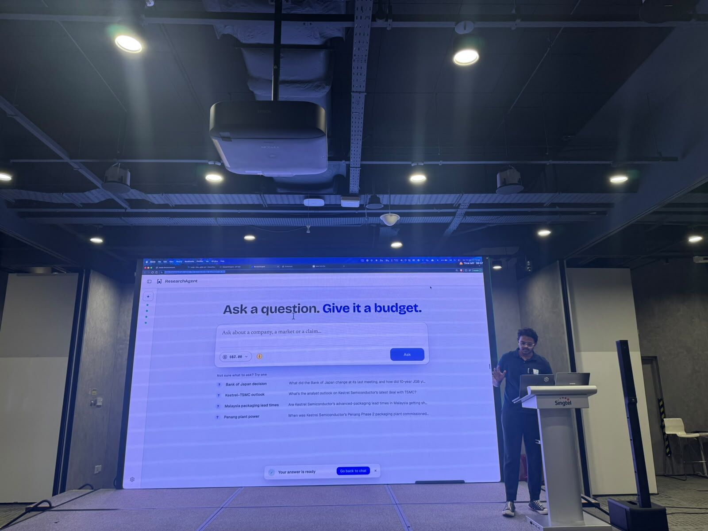
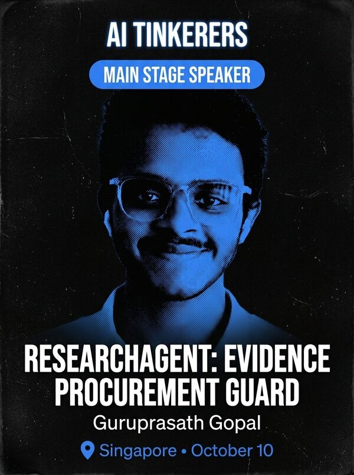

39 days, two coding agents, one demo.
ResearchAgent is a research agent with a wallet. This page is how it got built, told only in numbers: every commit, pull request, prompt and token, replayed from git, GitHub and the coding agents' own logs.
Bars above the line: commits per day on any branch. Bars below: prompts typed to the coding agents per day. Numbered dots are milestones; click one to jump there, or drag across the chart to scrub. The shaded band is the final push, 4 to 11 Oct, drawn wider so its days are readable; the replay slows down there.
Codex drafted it. Claude Code shipped it.
September was a Codex project: hackathon prep, prototypes, a research plan. On 4 Oct the work moved to Claude Code, which ran the final push with subagents and parallel worktrees.
What the agents did with their hands
When the human typed
Counts come from the local Codex and Claude Code logs for this project. A prompt is one message the human typed; prompts agents wrote to subagents, tool output and local shell commands are excluded. Hours are Singapore time.
Most of it landed after dark.
Each column is a day, each row an hour, Singapore time. The darker the cell, the more happened in that hour.
One cell is one hour of one day. Commits count every branch; prompts count both agents. Hover a cell for its count.
On 6 Oct, the prototypes went in the bin.
For a month, most of the repo was design exploration: clickable HTML prototypes, canvases and diagrams. The 6 Oct pivot retired them and rebuilt search, payments and the agent loop in two days. The repo shrank, then filled with tests and a corpus.
Text lines in the main branch at the end of each Singapore day, grouped by top-level folder. Third-party hackathon starter repos and lockfiles are left out. Hover for the breakdown on any day.
23 pull requests between 1 am and 3:19 am.
The night after the pivot, one Claude Code session orchestrated the rebuild: contracts first, then corpus, search, payments, the agent loop and the UI, each in its own worktree and pull request. Speed had a price: CI went red at 1:46 am and stayed red for the rest of the night, until a one-line fix at 10:40 the next morning. This is that night, replayed from GitHub.
One row per pull request, from opened to merged; the dot marks the merge. The ticks along the bottom are CI runs: green passed, red failed. Real titles and times from GitHub; hover a row for the full title and its line counts.
Over a billion tokens, almost all of them re-read.
A coding agent re-reads its whole conversation on every step, so most tokens are cached context, not new work.
Token counters from the saved logs, including subagents. They are not a bill or a subscription percentage. Codex counts cached input inside its input; Claude Code reports cache reads separately; both are shown here as cached context.
Specs as issues, tests as the proof.
Every piece of work started as a GitHub issue, with tests written alongside the code.
Test cases in the main branch
GitHub issues, opened and closed
Every CI run, 5 → 11 Oct
Test cases are it(…) and test(…) calls in test files on the main branch. The long red stretch on 7 Oct is the overnight run, which kept merging while CI failed; a one-line fix turned it green at 10:40.
Same product, four days apart.
The 5 Oct build answered questions. The 9 Oct build looked like something you'd use: a chat-style shell, a budget in the prompt box, one-click example questions. Drag the handle.

Screenshots from the project's UX walkthrough, captured 5 Oct 20:47 and 9 Oct 09:00 SGT.
Live on stage, live on Cloud Run.
ResearchAgent took the main stage at AI Tinkerers Singapore with a live run on a S$2 budget. The demo ran on Google Cloud Run as a single container: the app, the API and the writers' sites together.

The Google Cloud Run sponsor prize for the top three Cloud Run demos of the night.

Thank you to Joe Heitzberg, Son Le and the volunteers who run AI Tinkerers Singapore, and to Lisa Shen and the Google Cloud Run team for the Cityscape Agent demo and the credits.